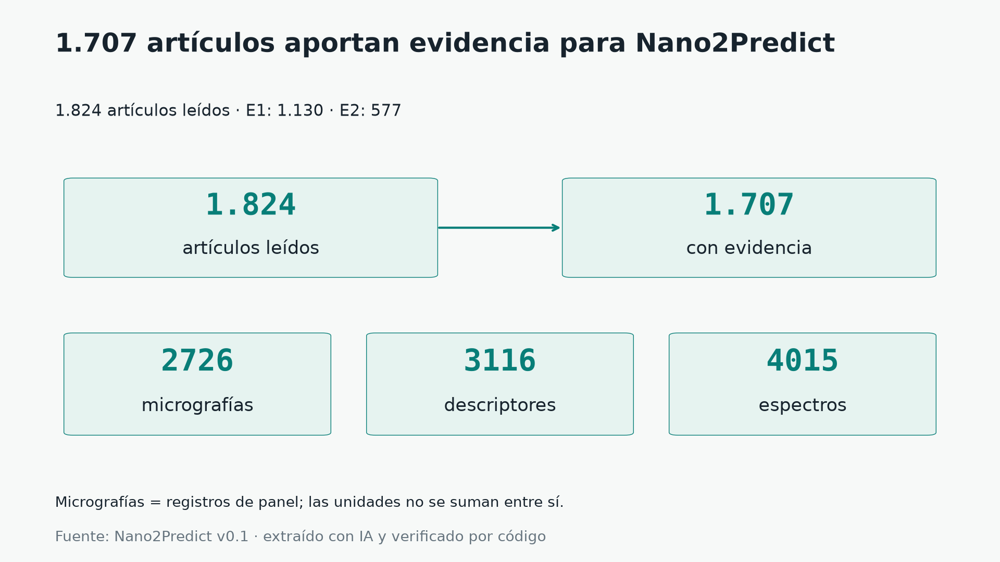

HACKATÓN · NANOINFORMÁTICA · BASE v0.1
De la literatura a la evidencia que se puede comprobar.
Nano2Predict reúne micrografías, medidas y espectros de nanoportadores, cada dato con la cita del artículo de donde sale. Y pone a prueba, con honestidad, qué se puede predecir con ellos.
← → cambiar de sección · P modo presentar · F pantalla completa
1 · EL PROBLEMA
Los datos existen, pero están encerrados en PDFs.
Cada laboratorio mide el tamaño, la carga y la forma de sus nanopartículas y lo publica en un artículo: en tablas, en pies de figura, en frases sueltas. Para entrenar un modelo hacen falta tres cosas juntas:
- 1La micrografíala imagen de microscopía electrónica
- 2Las medidas de la misma muestratamaño, PDI y potencial zeta
- 3La fuenteDOI y cita textual para volver al artículo
Sin esa base, no hay modelos. Así que empezamos por construirla.

2 · CÓMO SE CONSTRUYÓ
Cada dato lleva su cita, y un programa comprueba que existe.
Un dato real, de la figura a la cita
3 · DE LA FIGURA AL RECORTE: CÓMO ELEGIMOS QUÉ USAR
Una figura de artículo casi nunca es una sola micrografía.
Muchas figuras son compuestas: varios paneles (micrografías, espectros, fotos, gráficos) en una sola imagen. Algunas traen espectros superpuestos de varias corridas. Un modelo no puede aprender bien de una figura entera mezclada: hay que separar.
La calidad de las imágenes, no la arquitectura del modelo, es lo que más limitaba el resultado.
modelos/flujo_figuras/figuras_vision.csv.3 · DE LA FIGURA AL RECORTE
Cinco destinos para cada figura.
3 · DE LA FIGURA AL RECORTE
De la figura original a sus recortes, en tres pasos.
3 · DE LA FIGURA AL RECORTE
Del artículo al recorte: qué entra al modelo.
3 · DE LA FIGURA AL RECORTE
Qué recortes entran al modelo y cuáles no.
| Entra | No entra |
|---|---|
| Micrografía de partículas (TEM, SEM, STEM, AFM, cryo-EM) de nivel superior | Insets (cajas hijas dentro de un panel) |
| Su clase es la del artículo | Espectros, histogramas, esquemas y tablas |
| Fluorescencia, confocal, histología | |
| Biología: bacterias, células, tejido; y partículas dentro de células (conjunto aparte) |
Lo que no entra se conserva en la base, pero no se usa para entrenar.
3 · DE LA FIGURA AL RECORTE
Una muestra sin retoques: tres recortes al azar por clase.
Créditos de estas imágenes (artículo, DOI y licencia)
3 · DE LA FIGURA AL RECORTE
Cómo se comprobó la calidad de esta etapa.
4 · EL CAMINO
De una hipótesis preregistrada a una base congelada.
5 · LA BASE EN FIGURAS
Qué hay dentro de la base.
6 · EL PRODUCTO
El Atlas: la base, navegable.
- Filtra por portador y técnica. Por ejemplo, liposomas con cryoTEM.
- Cada ficha trae su cita. Micrografía, DOI, tamaño, PDI, zeta y la frase del artículo que respalda cada medida.
- Una demo en el navegador. «Sube tu micrografía» devuelve la clase de portador que predice el modelo final, con sus advertencias: solo micrografías de partículas y probabilidades sin calibrar.
- El modelo, por separado. La etiqueta de la base y la predicción nunca se mezclan; la predicción es exploratoria. Se muestran las micrografías más parecidas, siempre de otros artículos.
Si la vista previa queda en blanco, sirve la carpeta con python producto/presentacion/servir.py y abre http://localhost:8000/web/.
La vista previa del Atlas se carga solo si la pides.
7 · MODELOS
Una escalera de lo simple a lo complejo, siempre contra una línea base.
Todo se evalúa separando por artículo (5 particiones): nunca hay figuras o muestras del mismo artículo en entrenamiento y en prueba. Los resultados son modestos, y los presentamos como modestos.
8 · DECISIONES
Qué decidimos, por qué, y con qué evidencia.
Las marcadas «Propuesta» las redactó Bryan a partir de los archivos del repositorio y las confirma Héctor.
| # | Decisión | Por qué | Evidencia | Estado |
|---|
9 · LIMITACIONES
Lo que sabemos que nos falta.
Lo que no afirmamos
- Que los datos estén validados por personas: el control de calidad fue en 20 artículos y asistido por IA.
- Que el modelo «acierte» o funcione en producción: son resultados exploratorios, sin validación externa.
- Que se pueda predecir el tamaño: el error relativo mediano sigue en ≈ 44 %.
10 · SIGUIENTES PASOS
Lo que sigue.
CRÉDITOS
Gracias.
- Europe PMC por abrir el acceso a la literatura científica. Los artículos y figuras usados son de licencia CC BY, con crédito al DOI.
- Kabré (supercomputador del CeNAT · Colaboratorio Nacional de Computación Avanzada, CNCA), donde se calcularon los vectores de imagen y se probó el ajuste fino en GPU.
- El profesor William Zamora, del curso de Quimioinformática, por sus preguntas y su guía.
- Equipo: Héctor (datos y modelos), Carlos (Atlas) y Bryan (presentación y video).
Reproducir esta presentación
python producto/presentacion/construir_datos.py
python producto/presentacion/servir.py
# se abre http://localhost:8000/presentacion/Nano2Predict · base v0.1 ·